|
|
| 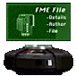 |
A lot of this information is from common knowledge on Star Wars, some comes from hearsay and some of it is off the top of my head. If I made a blatant error with the information let me know so I can correct it. But it should be accurate.
Weapons
Each of the weapons is highlighted with key specifics and an image in addition to a general description of the weapon and it's sugested use. Here is a key to help you quickly determine information about a given weapon from the diagram.
| 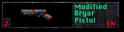 | Modified Bryar Pistol |
| Ammo Used: Energy Units {1 Unit per Fire}
Secondary Fire: None. |
|
| The Bryar Pistol is really just a Bryar Rifle with the barrel and muzzle shortened(note the clarification of 'modified'). Hardly state of the art, it is usually found in antique gun collections, but is also used by various mercenaries. A reliable blaster, it has a very high degree of accuracy and packs a stronger and more efficient punch to it's bolts than the standard Stormtrooper Rifle. It does have a fairly slow repeat-fire rate(2 shots/s) and like any laser weapon it's impact decreases over distance.
The pistol is best used over medium range against lower end enemies. The accuracy of the weapon allows you to pick off your enemies with relative ease without letting them get close enough to become a real danger. Very useful in the right situations and good to fall back on when you start to run low on ammo since it isn't as greedy as the Stormtrooper Rifle. |
|
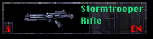
As mentioned above you won't have much luck with this weapon when trying to pick off an enemy over a great distance. Thus it's use an assasssin or stealth weapon is virtually nil. However the randomness of it's bolts can become an asset in short range fights when combined with the rapid rate of fire, allowing you to sweep the rifle across a room and usually manage to take out a fair percentage of the occupants in just a couple passes. The rifle is a fairly trusty standard during most operations, and can be used against most enemies you'll come across.
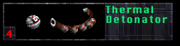
The TD is a very useful weapon. While aiming can be a bit tricky at first users find it easily learned, and tossing a detonator down a stairwell with the three second timer, listening to the 'tink, tink, tink' before the explosion hits can be rather addictive in addition to it's usefulness in clearing out enemies while minimizing danger to yourself. Detonators are expecially useful for large groups of Imperial troops, particularly Stormtroopers in formation. One well-placed TD will deal with the situation. TDs are also excellent in tight firefights if you have cover to duck behind, or when trying to take out an enemy still at medium to long range when you're trying to conserve blaster ammo. And remember that a detonator can often blast open a wall if it's structurally weak.
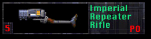
This is easily the most effective weapon you can use. The ammo isn't hard to come by and the accuracy and rapid fire rate make it especially devastating over long and short range. You can use it to pick off enemies at long range before they even spot you or before they get within their own weapons' range. In close quarters just hold down the trigger and pivot to sweep a room clean. And when you need a short burst the secondary fire can take out most enemies with just one or two shots. A very efficient weapon at only one cell per fire it also has the useful side effect of forcing back an opponent it hits. This is especially useful for Dark Troopers or for pushing enemies off a cliff.
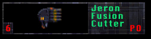
While primarily use for construction the cutter can serve as a weapon with little or no modification. It doesn't have a very fast repeat-fire rate(4 shots/s) but is reasonably accurate and each of the green energy bolts is slightly more powerful than a laser or the repeater's bolts. It's best used for the four-barrel burst in close range; that will take out just about any common enemy and it is especially effective against probe droids. Beware, though, because each burst will eat up eight energy cells, making it costly when used too often.
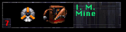
The mine is still a very useful tool in warfare and both sides of the civil war use them liberally. You can often find them scattered about in your approach path; most times you never see them so be sure to listen for the tell-tale beep that signals activation, after which you have a split second to get away. They are best used when you are being pursued by large groups of enemies or when you want to get through a structurally weak section of wall. Be sure to get behind some cover before the mine blows. With the primary key you have 3 seconds to get away before detonation. With the secondary the mine is laid with a proximity trigger and motion detector that waits for a moving object within it's activation radius before detonating. You can find mines singly or in bags of 5. You can carry up to 50 mines at once.
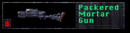
The mortar gun is, as mentioned above, very useful for clearing out large groups of enemies. Stormtrooper formations are especially susceptible to this type of attack. The mortar gun is also very good for taking care of enemies located on platforms above you, requiring a minimum amount of aiming to take care of your target. Laser Turrets and Welding Arms are also fairly easily disposed of with only a few well-placed shells. The gun is also good for covering large distances; remember that a 45 degree angle allows for maximum range.
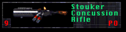
This weapon has the very useful attribute of splitting it's waves to take out mulitple opponents. As far as anyone can tell the waves do not lose any power when split among mutiple enemies, and combining that with it's long range capabilities makes this the premier weapon for dealing with large groups over long distances. In close quarters this weapon has the nasty habit of splitting the wave to hit you as well as any target; if there is no target and you're in a small room or cavern the weapon will target you alone. So use this weapon primarily when you have room to work with.
Stormtrooper Rifle
Ammo Used: Energy Units {2 Units per Fire}
Secondary Fire: None.
This is the real reason that Stormtroopers are often the laughing stock of the galaxy. The standard issue laser rifle is probably the most innacurate weapon you'll come across in your adventures and it's also one of the most greedy when it comes to ammo. While it has a much faster repeat-fire rate than other weapons at 7 shots/s it still has the same problem of losing power over long distances but the horrible degree of accuracy limits it's effectiveness to close range firefights. The rifle is used most often by Imperial Stormtroopers and Commandos but is a very common weapon throughout the galaxy. As such you'll find ammo for this rifle in much larger quantities than for other more exotic weapons.
Thermal Detonators(TDs)
Ammo Used: Thermal Detonators
Secondary Fire: Gives a three second delay before detonation.
Thermal detonators are the basic standard explosive across the galaxy. Compact and easy to use they are instantly recognized by their spherical shape and people quickly learn not to mess around with somebody packing a few of these. Their small size can be a bit misleading because they pack a powerful punch and also due to their small size and abll shape they are easily thrown over short-medium distances. You can usually find these in the hands of a Gran as they are known to favor explosives over blasters. Otherwise TDs can also be found in singles or strings of five in most armories. You can carry a maximum of 50 detonators at any one time.
Imperial Repeater Rifle
Ammo Used: Power Cells {1 Cell per Fire, Primary; 3 per Fire, Secondary}
Secondary Fire: Three bolts in a triangle formation.
Also referred to commonly as the 'autogun' or simply 'repeater', the Imperial Repeater Rifle was developed for the Dark Trooper project. The original prototype was designed by weapons master Moff Rebus, but a scaled down version is what is in use today. The repeater uses standard power cells to fire a highly accurate blue bolt for the primary fire and a trio of bolts in a triangle formation for the secondary fire. It has a fast repeat-fire rate(5 shots/s) which in close or long range can be deadly.
Jeron Fusion Cutter
Ammo Used: Power Cells {1 Cell per Fire, Primary; 8 per Fire, Secondary}
Secondary Fire: Fires all four barrels at once in a cone trajectory.
The fusion cutter is a four barreled hand held tool used in construction and in mining to cut through rock. This particular model is made by Jeron, a large and well-known manufacturer of anything from cutters to hydrospanners. The fusion cutter has two settings for use. The first fires each barrel seperately while the second unleashes all four barrels in a cone-shaped trajectory. The first is used for standard mining, the second for when you need a more powerful burst of energy.
Imperial Machines(I.M.) Mines
Ammo Used: I.M. Mines
Secondary Fire: The mine is activated with a proximity trigger and motion sensor.
One of the nastiest of weapons used in times of war, the mine is responsible for thousands of innocent casualties. Manufactured by Imperial Machines, a outside contractor of Imperial weapons, thousands of these mines are laid every day in battle regions. Hundreds never find their use combat and are left to be triggered by civilians. Worse yet, the unlucky person will often survive the experience only to lose parts of their body in the explosion. Modern cybernetics couple with advanced medical techniques can replace the limbs, but there are some scars that never quite go away.
Packered Mortar Gun
Ammo Used: Shells {1 Shell per Fire}
Secondary Fire: None.
A modifcation on the ancient mortar idea, this hand-held version is a very powerful weapon which lobs shells which explode on impact. It's become a favorite of many mercenaries because of it's simplistic nature and also because of it's great effetiveness against large numbers of enemies. Many a garrison has fallen prey to attackers wielding no much more than a blaster and one of these babies. Very easy to use and to aim, it quickly becomes a favorite tool.
Stouker Concussion Rifle
Ammo Used: Power Cells {4 Cells per Fire}
Secondary Fire: None.
This rifle is a much more exotic and complex weapon than you generally find on the market. It firs compressed bullets of ionized air that explode in shock waves. The waves are stopped only by contact with a solid object, giving the weapon a near infinite range. The rifle is manufactured from scratch by a Trandoshan gang, the Sissks and it takes it's name from the maker of the primary concussion chamber, Stouker.
| 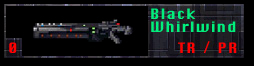 | Black Whirlwind * |
| Ammo Used: Teratium Cartridges {1 per Burst Fire, Primary}, Pyro Rockets {1 Rocket per Fire, Secondary}
Secondary Fire: Launches a long range Pyro Rocket. |
|
| The Black Whirlwind is the latest monstrosity to come out of the Imperial Tactical Weapons Facility. The project began when the Emperor decided that a more vicious weapon was required to arm the Dark Troopers. He believed that the failure of the project was due more to the incompetence of General Mohc than to problems inherent in the program. Palpatine fingered Trem Goltend, a renowned scientist, for the job of designing and building the new weapon. When Goltend appeared reluctant to cooperate, Imperial Troops kidnapped his daughter. Faced with the loss of his only daughter Goltend forced himself to work in his lab on Coruscant until the weapon was completed. The final result of his designs was the Black Whirlwind.
The Whirlwind uses two new revolutionary types of ammunition, Teratium Cartridges and Pyro Rockets. The cannon can be used for both full-scale assault or stealth attacks due to it's both powerful and accurate nature. Ammunition for the weapon will be scarce; you'll need to find special Imperial Armories or take out Dark Troopers equipped with the new weapon to gather any stockpiles. In terms of firing speed it has the same speed as the Assault Cannon and equal power to it's blasts. |
|
Ammunition
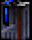
Energy Units(EN)
Used In: Modified Bryar Pistol, Stormtrooper Rifle
Energy Units are the standard ammunition for laser weapons, and as such they can be found in abundance wherever you go, especially Imperial installations. Each clip contains 15 units. You can also liberate the clips from the rifles your opponents drop. You can hold a maximum of 500 Energy Units at any given time. You can usually get some Energy Units from Stormtroopers, Commandos and Imperial Officers.
| 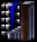 | Plasma Cartridges(PL) |
| Used In: Assault Cannon | |
| Plasma has never really been effectively used in a weapon until it was developed as part of the top secret Dark Trooper Project so the cartridges are few and far between, just like the Assault Cannons they're used in. Each cartridge contains enough plasma for 20 rounds. You can sometimes find a few in Imperial armories, or else you can collect them from any Dark Trooeprs you manage to take down. | |
Power Cells(PO) |
|
| Used In: Imperial Repeater Rifle, Jeron Fusion Cutter, Stouker Concussion Rifle | |
| Power Cells are used for just about any energy tool/weapon besides the standard laser rifles. Rather than serve as literal ammunition the cells are really used to power the weapon; but considering they are really the only part of the tool/weapon that gets depleted with each use they are commonly referred to as ammunition and are also collected as such. Cells can be found in packs of 10 or they can be removed from weapons you come across. A repeater or a fusion cutter will hold 30 cells, and a concussion rifle will hold 100. You can hold up to 500 at any one time. Droids are good sources for cells, as are the concussion rifles Trandoshans usually carry. | |
| 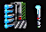 | Pyro Rockets(PR) * |
| Used In: Black Whirlwind | |
| The Pyro Rockets are a variant off of the standard missiles but utilize the Graastel stone from the Berlam System to pack their punch. The rockets are used in the Black Whirlwind. The cannon can contain 20 of the rockets, which are loaded singularly into the firing chamber and then launched. The rockets, like missiles, explode on impact. Due to their rare nature the rockest are rare, and will only be located in specialized armories or they could be captured from a defeated Dark Trooper armed with a Whirlwind. They can be found singly or in racks of 5. | |
| 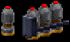 | Shells(S) |
| Used In: Packered Mortar Gun | |
| Shells are scaled down versions of the mortars used on the battle field and are especially suited for the hand-held Mortar Gun. The shells explode on impact with a solid object and pack a pretty powerful punch. You won't find any enemies carrying these around, so look to armories as your best bet. You can find them in singles or in packs of 5. | |
| 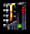 | Teratium Cartridges(TR) * |
| Used In: Black Whirlwind | |
| Teratium is made up of a combination of various gasses mined from Lerdron in the Kaldon System. The gasses are contained separately in the cartridges due to their reactive nature. When the weapon is discharged the gasses are combined, injected with energized plasma and propelled from the barrell of the cannon. The Black Whirlwind is the first weapon to effectively make use of this type of ammunition so the ammo will be scarce. Each cartridge only holds 20 rounds, so use them wisely. | |
* - The Black Whirlwind is not a weapon found in the original Dark Forces game. It comes from an add-on level, Operation Archangel Episode II: Dungeons of Gamorra. But I think the thing is just so dang cool and the story behind it is great, so I've added it and its ammunition to this list. You can find the patch for the Black Whirlwind on the Patches Page.
 |
||||||